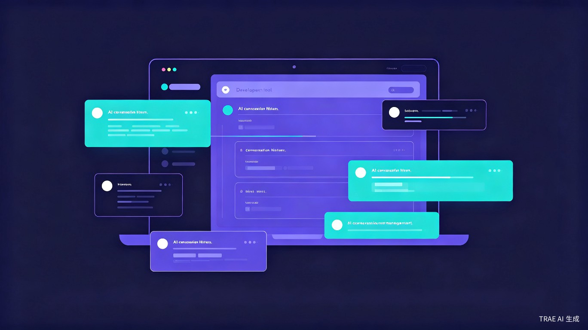

会话列表
按日期分组排序，显示项目名、首条消息、消息数

可视化浏览和管理 Claude Code 的历史会话记录，让每一次 AI 协作都有迹可循。
想解决什么问题：使用 Claude Code 进行开发时，历史会话记录分散在本地，难以快速回顾、查找和恢复之前的对话内容，导致重复沟通、效率低下。
为什么会想到做这个：我自己是 Claude Code 的重度用户，经常需要在多个项目间切换，但找历史会话很麻烦，没有直观的浏览和管理工具，每次想恢复之前的会话都要手动翻找。
大概是什么产品：一个 Web 应用，可视化展示所有 Claude Code 历史会话，支持按日期浏览、搜索过滤、查看对话详情，并能一键恢复会话。
使用 Claude Code 进行日常开发的程序员、技术团队，尤其是需要频繁切换项目或回顾历史对话的开发者。
需要回顾之前某个问题的解决方案时；想在不同项目间快速切换会话时；想统计自己的使用情况和活跃项目时。
Claude Code 原生缺乏可视化的会话管理界面；历史记录查找困难，无法按内容或项目名搜索；恢复会话需要手动输入命令，不够便捷。
将分散的会话记录集中可视化，支持快速搜索和一键恢复，显著减少查找和切换会话的时间成本。
帮助开发者更好地管理和利用 AI 编程助手的历史记录，提升人机协作效率，降低信息丢失和重复沟通的成本。
按日期分组排序，显示项目名、首条消息、消息数
聊天气泡样式展示完整对话内容
按消息内容、项目名、会话 ID 搜索
每日消息数折线图、项目分布饼图
一键启动 claude --resume 恢复历史会话